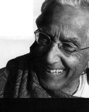

RAIMON PANIKKAR
Gala Naoumova'nın uyarladığı versiyondan yapılan tercüme edilmiştir.
En büyük din filozoflarından biri olan Raimon Panikkar 1918 yılında Barselona'da, Katolik bir İspanyol anne ile Hintli bir Hindu babadan doğdu. Doğa bilimleri, felsefe ve teoloji diploması alarak, Harvard ve Kaliforniya üniversitelerinden Roma'ya ve Hindistan'daki Varanasi Üniversitesi'ne dek dünyanın en iyi üniversitelerinde dersler verdi. Uluslararası bir üne kavuşmasına yol açmış olan yayınlarının yanı sıra rahip olarak ve Hinduist olarak faaliyetleri onu kültürler ve dinler arası buluşmalar alanının en özgün düşünürlerden biri yaptı. Kültürler arası ve dinler arası diyaloğun teorisyeni ve pratisyenidir, zamanımızın uygarlığının en büyük eleştirmenlerinden biridir.
Batı dünyası ile Doğu bilgeliği arasında "salcı" olan Raimon Panikkar farklı dillere çevrilen kırktan fazla kitabın yazarıdır. Bugün Katalonya dağlarına çekilmiş olan Raimon, çağdaş dünyaya bakışı meditasyondan ve sessizlikten beslenmektedir. Fransa'da çıkmış eserleri arasında şunları sayabiliriz: Albin Michel yayınlarında Entre Dieu et le cosmos. Une vision non dualiste de la réalilité (1997); Actes Sud yayınlarının "Le souffle de l'esprit" dizisinden Une christophanie pour Notre temps (2001) ve Initiation aux Veda (2003); 2007 yılında "Spiritualité" dizisinden La plénitude de l'homme.

PANIKKAR
Britanya İmparatorluğu on dokuzuncu yüzyıla önemli bir damga vurdu. Dünya savaşları ve soğuk savaş, Sovyetler Birliği'nin çöküşünden sonra neo-liberal ekonominin zaferi düşünüldüğünde, yirminci yüzyılın bir Amerikan yüzyılı olduğunu söyleyebilir miyiz?
Olumlu cevap vermeye çalışacağım, ama bu olumlamayı ayrıntılandırmak istiyorum ve belki de yalnızca bir görüntünün var olduğunu bile söyleyebilirim. Bir dünya devleti vizyonunun idealizmden ve sömürgecilikten kaynaklandığı kanısındayım. Bugün bile dünyada tek bir kültür egemen, bu da Batı kültürü. Aynı örneği ele alırsak, Britanya İmparatorluğu Hindistan'da gelişme gösterdi ve sömürge imparatorluğunun çöküşünden sonra geçmişte olduğundan daha fazla başarı elde etti. Hintliler Britanyalılardan bütün toplumsal kurumlarını aldılar: parlamento, dil, demokrasi, seçimler, hukuksal sistem. Ama en önemli olan nedir: Ekonomik faktör mü entelektüel faktör mü, pazarın egemenliği mi insan tininin egemenliği mi?
Ekonomik ve politik açıdan, farklı resmi kurumların dış politikası dikkate alınırsa, Amerika elbette büyük bir nüfuza sahiptir. Dünyanın durumuna başka bir açıdan, kültürlerarası bir perspektiften bakarsam, soruya olumlu cevabı doğrulayan ölçütler uygulayamam.
Günümüzde, dünyada İngilizce konuşuluyor, bütün dünya İngilizce konuşulan bir oteller zinciri. Dünyanın üçte ikisi sanayileşmiş dünyanın belirlediği ölçütleri benimsiyorsa, bu durumda bizler uşağız ve tek yapabileceğimiz şey şunu söylemek olur: "Bu Amerikan yüzyılı, yeni dünya düzeni denen şey pax americana'dan başkası değil." Biz bunu kabul edersek, dünya entelektüel bir boyutu yitirecektir.
Birkaç yıl önce, Amerikalı tarihçi Paul Kennedy, Büyük Güçlerin Doğuşu ve Çöküşü kitabıyla büyük başarı kazandı. Bu türden birçok kitapta olduğu gibi, yalnızca ekonominin ele alınması, antropolojik faktörlerin işlenmemiş olması beni şaşırttı.
Söz konusu durumda, GSMH'nin ve ekonominin tarihi meşru olsa bile, dünya tarihine dair soyut bir bakış açısı var. Zekice ve önemli bir eser bu. Ne var ki, dünya tarihi yalnızca fikirlerin akışı değildir, insan varlığının yazgısıdır. Yalnızca metalara, rakamlara ve nesnelere bağlı olan bir ekonomi insani bir ekonomi değildir. İnsanlık tarihi söz konusu olduğunda insan varlığı göz ardı edilemez.
Özellikle yirminci yüzyılda sergilediği devasa dinamikle birlikte, on sekizinci ve on dokuzuncu yüzyılın sanayi devriminden bu yana teknoloji insan evriminin temel motorlarından biri değil midir?
Günümüzde teknolojinin en güçlü motorlardan biri olduğu tartışmasızdır. Hatta şunu da ekleyebilirim: dünyanın en korkunç şeyidir. Teknolojik zihniyet yaşamın her alanına nüfuz eder. Teknokrasi –başlangıçta tekniğe ve makinelerin yapımına ilgi uyandırmış olan güç, kratos– teknolojinin kullanımını sağladı. Bu bir ruh hali ve bir düşünce tarzıdır. Teknokrasi yine de dünya tarihinde bir yeniliktir. Onun büyüklüğü ve trajedisi burada yatmaktadır, çünkü insan varlığının geleceği tehlikededir. Teknokrasinin demokrasiyle uyuşmadığını hep söylüyorum ve bu fikri savunmaya da hazırım. Teknokrasi, teknolojinin iktidarıdır. Pratiği antidemokratiktir: power, veto, seçkinler ve ardından toplum ve gizli polis. Nükleer enerjimizin olup olmayacağına karar veren iktidardır. Nükleer enerji, atomun füzyonu ve parçalanması, bunun anlamı nedir? Hiç fikrim yok. Bu soruya sorumlu bir insana yakışır cevap verebilmek için nükleer fizikte en azından yedi yıl öğrenim yapmış olmak gerekir. Söz konusu edilenin ne olduğunu bilmiyoruz, duyarlılığımızı yitirdik. Bana göre, atomun parçalanması kozmik bir düşüktür, buna karşı çıkıyorum. Teknokratik tin Tanrı olmak istiyor, göğü fethetmek ve Babil kulesine varmak istiyor. Kısacası, teknokrasinin baskısının insan haysiyeti ve insanlık tarihi üzerinde olumsuz bir etkisi var.
İngiltere'de sanayi devriminin başlangıcına oranla, ardından Fransa'da, Hollanda ve Almanya'da bu devrimin başlamasına oranla –burada global terimlerden söz ediyorum– yirminci yüzyılın pek bir gelişme kaydetmediği anlamına mı geliyor bu?
İlerleme fikri beni ikna etmiyor. Doğrusal bir zaman anlayışı varsayıyor ve bunun da bilimsel bir temeli yok. Güneş sisteminin içinde oluşmuş bir zaman kavramının genelleştirilmesi, bu sistemin dışında yanlış bir çözümdür. Şunu demek istiyorum: Doğa bilimlerinin zamanı gerçek bir zaman değildir, aslında hesap yapmayı sağlayan tek bir matris ve kod vardır. Nedir söz konusu olan? Ölü bir dünya, astrofizik, hangi noktada gerçek olduğunu bilmiyoruz bile, ya da insan yaşamı, deneyimimiz mi yoksa?
İlerlemeye, ilerleme ideolojisine inanmıyorum dediğimde, büyük hareketlerin, dinamiklerin, büyük momentlerin, insanlığın yıldızlı anlarının olmadığı anlamına gelmiyor bu. Ne var ki, hep aynı planda cereyan eden monoton, doğrusal bir şeye inanıyor değilim.
Sonuç olarak, teknoloji, çok sayıda varyantı içinde, insanlığı ilerletmedi mi? Teknoloji bize fazladan bir özgürlük getirmedi mi?
Varsayılan bu özgürlük özgürlük değildir. Bir süpermarkette on farklı marka arasından seçim yapmamı sağlayan bu sözde özgürlük müdür kastedilen? Özgürlük, belirli sunular arasında seçim özgürlüğü değildir; öyle olsaydı, sunu bol oldukça daha özgür olurduk. Buda der ki: "Ne kadar çok arzularsan o kadar az özgürsün." Tamamen paradoksal terimlerle ifade edersek, özgürlük zorunluluğun bilinciyle büyür. Dışardan ne kadar az belirlenirsem o kadar özgür olurum. Teknokrasinin, grosso modo, daha ziyade bir insansızlaşmaya yol açtığı kanısındayım. Nicelik krallığına dahil olur.
Dünya yaşamın büyüyen bir cebirselleşmesini, soyutlanmasını ve insan kimliğinin yitimini yaşıyor.
Evet. Üstelik bu fenomenin geçmişe uzanan kökleri, Sokrates'ten başlamak üzere, Batı dünyasında. Sokrates'in dahice keşfi nedir? Kavram. Kavramsal dünya gerçek dünya olur. Kavramlar dünyası manipüle edilebilir ve matematikleştirilebilir; gerçek dünyanın matematik dünyaya itaat ettiğine inanılır. Oysa bu doğru değildir. Günümüzde, doğa bilimleri uzmanlarının bir bölümü, gerçekliğin sonuçta beynimizin kavramsal yapılarını belki de izlemediği olgusunu tereddüt ve umutla kabul etmeye başlıyorlar.
Altı milyon yıl boyunca insanın evriminin akışına uzanıldığında (tarihleme tartışmalı olsa bile), insan varlığının gerçekten ne olduğu düşünüldüğünde, belki de sonuçta şu denebilir ki, insan, evrim boyunca birbirini izleyen halkaların saf anlamda ampirik ve biyolojik bir zincirinden daha fazlasıdır. Bu fazlalığı ona getiren nedir? Aslında bu insan varlığını genel olarak oluşturan aşkınlık, metafizik ve kutsallık fikri değil midir?
Buna hiç kuşku yok. Tersi durumda, altı milyar insan arasından birinin biricik olduğu ve varoluşunun bir şeyler getirebileceği fikri, grotesk bir fikirdir. Başka türlü, insan insan olduğunu hissedemez. Bir zincirin basit bir halkasıysa eğer, bir mega-makine olur; belki bir yapay zekâ olur, ama insan haysiyeti olamaz. İnsanın bir mikrokozmos olduğuna, ama aynı zamanda bir mikro-theos olduğuna inanmazsak –ve mikrokozmos küçük dünya anlamına gelmez, bunlar altı milyar küçük dünyadır, hayır, mikrokozmos, küçük olarak bütün dünyadır, öyle ki bütün insanlığın yazgısı tek bir bireyde cereyan eder– evet, eğer buna inanmazsak, insan haysiyetini tamamen yitiririz.
İnsanın basit bir homo economicus'tan fazlası olmasını sağlayan nedir?
Benlik bilinci. Ahlaki vicdanını da bunun içinde keşfeder. Birçok Latin dilinde aynı sözcük bu ikisini belirtir: consciencia. Ahlaki bir vicdana sahip olmanın bu bilinci, insan haysiyetini oluşturan şeydir; ben bu nedenle biriciğim ve ben biricik olduğum için karşılaştırılabilir değilim –yalnızca özdeş kısmi alanları karşılaştırabiliriz. Her türlü sınıflandırmanın dışında kalma nedenim budur. İnsan Teslis'ten kaynaklanan bir sırdır: Tanrı, insandır ve insan tanrıdır. İnsan maddidir ve madde entelektüeldir. Tanrısal, insani ve maddi olanı ayırmak gerekir, ama birbirinden koparmamalı – gerçekliğin parçalanmasına karşı ileri sürülecek son yaklaşım budur. Teslis dinsel bir sıfat değil, insan varlığının temel bir niteliğidir.
Biten yüzyılı gözlemlersek, tarihi gözlemlersek, insan varlığının yorumlanmasında sizce bir nesnellik olabilir mi?
Saf anlamda nesnel açıdan bu imkânsızdır; saf anlamda öznel açıdan bu yanlıştır. Epistemoloji ontolojiden ayrıldığında meydana gelen özne ile nesne arasındaki ayrımda, felsefi bir öğe araya girer, ya Fichte tarzında idealizm ya da doğa bilimlerine denk düşen saf bir nesnelcilik. Bu ikilem tamamen yersizdir, çünkü özne ile nesne arasında hiçbir ikici ilişki yoktur. Bu, gelecek yüzyılın muhteşem ve güç felsefi misyonudur. Dünyanın yapısı diyalektik değildir, daha farklı bir katmanlaşması vardır.
Gelecek için sonuçlar çıkarmayı sağlayan yasa ya da kuralları, tarihe geri dönerek anlama ya da hatta çıkarma teşebbüsünün evrensel bir tarih anlamında uygun olmadığı anlamına mı geliyor bu?
Kendimi kabul etmediğim durumun içinde bulunuyorum: Sonuçta tesadüfi bir yörüngenin sosyolojik yasaları. İnsanların insan olmadığı ama yalnızca iki ayakları üzerinde yürüyen bir hayvan kalabalığı olduğu, ihtiyaçlarının ölçülebilir ve yerine getirilebilir olduğu şeklinde bir dünya soyutlaması yaparsam ve bunlar benim gözümde insan tarihinin ölçütleriyse, o zaman, muhtemelen birkaç yasa ifade edebilirim. Biyolojide mutasyonlar, jeolojide felaketler ve depremler olsa da, insanlık tarihinde hayal bile edilemeyecek ve yine de meydana gelmiş çok sayıda deneyim yaşanmıştır. İnsan özgürlüğüne inanırsam, belirleyici vakalar gibi tek tek vakaları da kabul etmeliyim –bu olmasa Gandhi asla varolamazdı.
Tarihi kim harekete geçirir? Tarihsel yasa, birey ya da thought and action –fikirler, tin tarihi ve gerçek tarih arasında bir etkileşim, Ernst Cassirer'in anladığı anlamda sembolik güçler, Isaiah Berlin'in anlamında fikirler tarihinde biriken ve ekonominin ve toplumsalın ampirik tarihinde etkide bulunan değer yapıları, hangisi? Tarihteki bireyler –siz Gandhi'den söz ettiniz– hareketli güçler midir yoksa harekete mi geçirilirler?
Ne biri ne diğeri. Dönemin ruhunu belirleyen kimdir? Birey midir, yoksa tersine bireye kapasitesini veren dönemin ruhu mudur? Bu da değil elbette. Yaşam yaşamdır çünkü içerden yer değiştirir, böyle olmasa yaşam değil fiziksel yasaların otomatik bir hareketi olur. Ben sistemlere inanmıyorum çünkü bunlar yaşama dair a priori bir tasarım verirler. Ben niçin Kopernik'e karşıyım? Çünkü bizi dünyanın, evrenin ölü bir hayvan olduğuna inandırıyor, hayvan bile değil, bir bedenler yığını, hayatsız, dışardan hareket ettirilen... Kim harekete geçirir onları? Tarihi kim harekete geçirir? Bir birey mi, yoksa o dışardan mı hareket ettirilir? Söyledim: ne biri ne diğeri. Hayat bireyi harekete geçirir.
Ama hayat bir özel mülkiyet değildir. Ben bu kelimeyi sevmiyorum ama hayat tanrısaldır. Gerçeklikte bağlanmamız gereken ve karşısında hem oyuncu hem seyirci olduğumuz bir boyut vardır. Dünyanın, dünya tarihinin yazgısı, ne doğa bilimleri tarafından, ne diyalektik tarafından ne de mantık tarafından çıkarsanabilir. Yoksa tamamen mekanist bir dünya anlayışının yeniden kölesi oluruz. Gerçekten de bu temel durumun üzerine eğilmek gerekir ve buna Batı uygarlığı tek başına karar veremez. Diğer kültürler, Batılı olmayanlar da tek başlarına çözüm bulamazlar. Bu nedenle diyalog ve işbirliği, eğer yaşamaya devam etmek istiyorsak, bir aciliyettir.
Samuel Huntington Medeniyetler Çatışması'nda dünyanın, yirminci yüzyıl sonunda kuşkusuz daha modern ama daha az Batılı olduğunu yazıyor. Soru: Batılılaşma olmadan modernleşme olabilir mi?
Bence modernite, sözcüğün bütün muğlaklığı içinde, Batı tininin bir icadıdır. Hint'te bu terim 1950'li yıllardan beri daimi bir problem ortaya koymuştur. Kimileri modernleşmenin Batılılaşma anlamına geldiğini düşünmektedir. Kimileri ise modernitenin ya da modern zamanların esasen Batılı anlayışa bağlı olmadığını söylerler, çünkü doğa bilimleri evrenseldir, çünkü teknoloji ayrımcılık yapmaz ve sonuç olarak bu düzen bir dünya düzeni halini alır. Ben buna kesin olarak itiraz ediyorum. Teknoloji evrensel değildir, hele nötr hiç değildir, kültüre uyarlanması gerekir. Modernite arayışı Batı'ya içrektir ve hemen hemen tüm diğer kültürlere dışraktır. Modernite kavramı, başka kültürlerin ilerlemesine model olarak tek bir modernite sunan sömürgeci bir kavram olarak kalır. Geçmiş yüzyıllarda bu modernite ordudan destek almıştı; günümüzde teknolojiye dayanmaktadır. Modern olmak zamana uyum sağlamaktır. Hangi zamana? Modernite esasen Batı anlayışına, madde, uzam fikrine ve doğrusal zaman fikrine bağlıdır.
Niels Bohr ve Erwin Schrödinger gibi büyük fizikçiler anlamında kronolojik zamana bağlıdır.
Zaman, uzam ve madde, bu biçimde, biricik bir kültürün –Batı kültürü– büyük ve dahice yenilikleridir. Ama diğer kültürleri basit folklor düzeyine indirgemeye hakkımız yok. Evrim fikri, bu evrimin doruğunda bulunduğumuza ve bu nedenle tüm diğer kültürlerin henüz evrimleşmemiş olduğuna inanmamızı sağlar. Batı uygarlığının kendini günümüzde dünyanın fatihi olarak kabul ettiği aşağı yukarı tartışmasız bir durumdur. Modernleşme, Batılılaşma, demokratikleşme ve Batı kaynaklı tüm diğer değerler anlamına gelse de, bu değerleri evrenselleştirmeye hakkımız yok. Başka kültürlerdeki denklerini bulmamız gerekir. Ben özellikle tek bir model, tek bir kavramsal evren, tek bir din, tek bir ideoloji, bütün dünya için tek bir modernlik isteyen monolitik, monist, totaliter sistemlere karşıyım.
Aslında, yirminci yüzyılda gezgene çapında bir hal almış olan Batı'nın evrenselciliğinin, ister teknokrasi tarafından olsun ister savaşlarla, yeni bir emperyalizm biçimi oluşturduğu söylenemez mi?
Ben yeni bir sömürgecilik biçimi derim, "emperyalizm"in ahlaki bir yananlamı var. Sömürgecilik, bütün bir dünyayı verili bir kültürle kavramak ve anlamak durumunda olduğumuza ve sonuçta tek bir paradigmanın varlığına inanmaktan ibarettir: bir tanrı, bir uygarlık, bir halk, bir imparatorluk, bir dünya bankası, bir dünya demokrasisi; tek bir mit için, Batı miti ya da sömürgecilik miti için bir yığın farklı sendrom. Bu doğal değil, bu insanlık durumuna denk düşmüyor. Çoğulculuğu tanımamız gerek ve çoğulculuk –de jure– insan kültürlerinin ve dinlerinin çeşitliliğinin tanınması, hoşgörü ve karşılıklı saygı anlamına gelir.
Dünya dinleri günümüzde atılım halinde ve politik bir boyut ediniyorlar. Ama hiçbir dini kavram insan varlığının bütününü üstlenmiyor, ne İslam, ne Hristiyanlık, ne Budizm, ne Konfüçyüsçülük, vs. Çağımızın kairos'u özellikle dinlerin ve kültürlerin buluşmasına, kültürlerarasına bağlı.
Sanıyorum Samuel Huntington'u medeniyetler arası çatışmanın dinsel bir şok olacağını söylemeye yönelten de bu; çünkü dinlerin bütün kültürlerin ruhunu temsil ettiğini keşfetti. Belki de şunu gözardı etti: Onun kültürünün ruhu da evrensellik iddiasındaki bir din.
Kültür ile dinsel gelenekler arasında, bir yanda değerler, diğer yanda modern teknoloji olmak üzere, bir uyumdan ya da uyumsuzluktan söz edilebilir. Daha sonra, Kuzey Amerikan Calvinizmi gibi pragmatik, ampirik, nesnel mantığa yönelik kimi kültürel gelenek yönelimleri var; Japonya'daki Şintoizmle birlikte görüldüğü gibi başka pragmatizm biçimleri de edinebilirler. Sonuçta bunlar, Latin Amerika gibi, on altıncı yüzyıldan bu yana Katolik skolastiğin tinsel geleneği içine ve güçlü metafiziğe kök salmış kültürlerden daha çok modern teknolojiyle uyum içindeler.
Benim bakış açımdan, bu uyum bir süre için geçerlidir. Sonuçta bu savunulamaz bir şizofrenidir ve bedelini biz ödeyeceğiz. Ama tarihin sabrı insanların sabrından daha büyüktür. Japonya bu şizofreninin bir kurbanıdır, günümüz Japonya'sının ekonomik krizinde ifade bulur, özellikle bu halkın kendini kavrayışında görülen kültürel bir krizdir.
Nobel edebiyat ödüllü Kenzaburo Oe Japonya'da ilerlemenin ve büyümeye inancın çöküşünün yarattığı anlamsal boşluğun Japonların kuşkulanmaya başlamasına yol açtığını söyledi.
Buna kesinlikle inanıyorum. Teknik homojenleşme insana kültürel, dinsel kimliğini, sonuçta insani kimliğini yitirtir.
Dünya pazarlarını liberalleştiren ekonomik ve politik model ile bir özgünlüğün, kültürlerin her birinin kültürel ve dinsel kimliğinin korunması arasında bir denge olabilir mi?
Bu soruya iki faklı düzlemde tepki göstermek istiyorum. Birinci düzey, Avrupa-merkezci ve tekno-merkezci tutumdur. Ben dünyayı başka türlü görüyorum. Bence, dünyanın imgesi çok dar, Avrupa-merkezci, ekonomik ve politik bir perspektifin içine sıkıştırılmıştır, iktidarın fethi ve korunması politikasının ruhu içindedir ve ben bu vizyonun gerçek dünyaya denk düşmediği kanısındayım. İnsan ölçüsünü yitirirsek, ki Sokrates-öncesi filozoflar bunu zaten kavramıştı, insanlığı yitiririz ve yalnızca soyut şeylerden söz ederiz. "Dünya" derken, soyut dünya kavramını anlamıyorum, yaşayan, acı çeken, mücadele eden ve ölen insanlarla birlikte insani bir dünyayı anlıyorum. Bence asıl dünya budur, yoksa gazetelerin, televizyonun ya da politikanın dünyası değil. Dünya bir örgütlenme değil canlı bir organizmadır. Oysa sizin sorunuz daha ziyade bir örgütlenmeye gönderme yapmaktadır. Canlı bir organizma, bir örgütlenmeden farklı yasalarla düzenlenir, çünkü bir yaşamı, bir ruhu, bir miti, idealleri, aşkı vardır; her insanlık canlı bir organizmadır. Canlı bir organizmanın ne kadar az yasası ve planı varsa o ölçüde sağlıklı ve mutlu yaşar. Oysa biz, ona katı bir çerçeve çizmek, onu politik, felsefi, ekonomik nitelikte kavramsal bir kafese kapatmak istiyoruz. Bunu derken, içeriğini eleştirdiğim bu soruya doğrudan bir cevap getirmek isterim. Teknokrasi ile kültür arasında düzenleme, uyum yoktur. Kötü bir yoldayız. Günümüz dünyasının girdiği yön, bizi felakete götüren kötü bir yönelimdir.
İslami gelenekteki farklı ülkelerde ortaya çıkan ve elbette bir tür anti-modernizmi temsil eden köktenci hareketler Batı dünyası için bir tehdit oluşturuyor. Amerika'nın güvenlik danışmanları güvenlik ve dış politika konusunda Amerikan politikasının zorunlu önceliğinden söz ediyorlar ve bunun bütün dünyanın güvenliği için belli ölçülerde zorunlu koşul olduğunu söylüyorlar.
Buna güçlü ve belki de biraz abartılı olarak tepki göstermeme izin verir misiniz? Alman nüfusunun önemli bir bölümü için bu tutumun nasıl bir makullüğü olabileceğini bizzat gözlemledim. Bir "Führer", bir politik "rehber" dünyaya egemen olduğunda ve Avrupa'ya bir düzen dayatmak istediğinde, güvenlik bütün dünya için sağlanmış mı olur? İki durum karşılaştırılabilir olmasa da buradaki sendrom aynıdır. Birinde patolojik bir politik suç durumu vardır; diğeri ise çok daha incelikli, daha zeki, daha "demokratik", daha misyonerdir.
On yedinci yüzyıldan ve 1823'teki Monroe Doktrini'nden bu yana Amerikan dış politikasının bütünü gibi.
Amerika'ya yolculuk etmeden önce Kutsal Kitap'ı gerçekten anlamamış olduğumu itiraf etmeliyim. Seçilmiş bir halk olma, tanrısal bir görevi yerine getirmek zorunda olduğuna inanma, bütün dünyanın barış ve huzurundan sorumlu olma bilincinin bugün ne anlama geldiğini orada keşfettim.
Amerikan uygarlığının hayalgücü ve bilinci için son derece önemli olan, neredeyse edebiyatta Melville'in Moby Dick'i ya Walt Whitman kadar önemli olan ünlü "belirgin yazgı" (manifest destiny)...
Bu güvenlik takıntısını oluşturan politik inancın kökleri modern felsefededir. Bunun kökleri Descartes'ta, pozitivizmde ve pragmatizmde bulunmaktadır. "Güvenmiyorum." Kimseye. Önemli olan "emin" olmaktır. Bu kaygıdan çıkmak için Descartes kesinlik aramıştır. Yaşayabilmek için, felsefe yapabilmek için kesinliğe ihtiyaç olduğu kanısındadır: "Emin olmalıyım." Politik güvenlik takıntısı buradan kaynaklanmaktadır. Bu, insana güvenmeyen bir düşünce tarzıdır. İnsanüstü bir şeye güven yoksa güven verilemez. Buna ister Tanrı deyin, ister Karma ya da yazgı. Kesinlik, daha fazla iktidar, daha fazla para, daha fazla silah, bütün bu miktarlardan daha fazlasıdır. Ama bu patolojiktir. Ben, Freud gibi, bütün kültürün patolojik bir sendrom olduğunu söylemek istemiyorum, ama günümüz kültürü kurumsal bir adaletsizliği temsil ediyor. Benim yargım Amerikan politik sistemine yöneliktir, halkına değil.
İnsan haysiyetinden söz edildiğinde, insan hakları sorunu doğal olarak gündeme geliyor. 1948 yılında Birleşmiş Milletler Bildirgesi'nde ifade edildiği haliyle bu haklar Batı anlayışının bütünüyle egemenliği altındadır. Diğer kültürel geleneklerin de –İslami, Konfüçyüsçü, Şintoist, Rus Ortodoks– başka insan hakları gelenekleri olduğu yavaş yavaş anlaşılıyor. Temel sorun, kültürlerin çokluğunun kabulü ve buradan yola çıkarak, insan varlığının hak ve görevlerinin temsilindeki çoğulluktur. Diğer yandan, teolog Hans Küng'ün ifade ettiği dünya çapındaki etik kavram vardır, yani Batılı anlamda insan haklarının evrenselleşmesinin dünya çapında demokratik etiğine giderek daha fazla ihtiyacımız olduğu fikri. Siz dünya çapında bir etikten yana mısınız, yoksa değerlerin göreceliğinden ve kültürlerin çoğulculuğundan mı?
Görecelik, görececilik anlamına gelmez. Görecelik, herhangi bir insan faaliyetinin bir ilişkiler ağı içinde bir gerçekliği olduğunun ya da bir de anlamı olduğunun bilincine varmamızı sağlayan anlayıştır. Bağlamı oluşturan bu ilişkiler, metne anlamını veren ilişkilerdir. İnsan hakları evrensel değildir ve 1948'de ifade edildiği haliyle onları evrenselleştiremeyiz. Bu biçimiyle, Protestan bir bireyci düşünce tarzından kaynaklanıyorlar. Ama bu, insan haklarının, Birleşmiş Milletler'de ifade ettiğimiz haliyle, değeri olmadığı ya da öteki kültürlerin bunları dikkate almaması gerektiği demek değildir. Bu insan hakları, başka kültürler için de dahil olmak üzere, bir geçerliliği, bir haysiyeti ve bir anlamı olan bir çekirdeğin, politik tarzda, sınırlı ve Batılı ifadesidir. Benim denklikler teorim üçüncü dereceden bir analojidir. Başka kültürler için, başka sistemlerde müdahale eden öğelerin dengini bulmalıyız. Küng'ün önerdiği insan haklarının evrenselleştirilmesine teoride benim karşı çıkış nedenim budur; ama pratikte bundan yanayım. Bir aşkınlık noktasına, belirli bir insani düzeye ihtiyacımız olduğundan, hukuksal yasalara ve evrensel değerlere pragmatik bir biçimde dayanmamız gerek. Çokdeğerlilik ve çifte-değerlilik burada yatmaktadır.
Yirminci yüzyıl sonundaki Amerikan tahakkümünden sonra günümüzün çokkutuplu dünyasında artık farklı büyük aktörler var. Örneğin Çin, Hindistan, İslam devletleri, Japonya, Rusya, Latin Amerika'nın büyük devletleri. Dünyanın global güvenliğine bağlı kimi çıkarları dikkate alarak iktidarı nasıl yapılandırabiliriz?
İktidar mı? Ben size başka bir soruyla cevap vereceğim: Günümüzde insanların birbirlerini öldürmemesi hangi iktidarın sorumluluğundadır: polis mi, ordu mu, kurumlar mı? Yaklaşık bir milyar insan günde bir doların altında yaşıyor. Her gün yirmi bin çocuk açlıktan ölüyor. Bizi açlıktan ya da savaştan korumak söz konusu olduğunda, bir dünya iktidarı, bir polis, uluslararası bir güvenlik konseyi neye yarar? Bu süpergücün sınırsız aşırılıklara kapılmamasına hangi iktidar göz kulak olabilir? Hobbes'un sorduğu soruyu sorarsak, tek bir cevap verebiliriz: homo homini lupus est. Bu durumda umut yoktur ve hiçbir insan, hiçbir süpergüç, Japonya, Amerika Birleşik Devletleri ve Avrupa'dan oluşan üç gücün arasındaki hiçbir denge bizi kurtaramayacaktır. Bu derin bir insani ve metafizik problemdir. MÖ altıncı yüzyılda Platon, ki elbette Hristiyan değildi, homo homini deus est diyordu, yani insan insanın tanrısıdır. Sorunun teknik olarak çözümsüz olmasının nedeni budur. Ben yalnızca politik iktidara bağlı hedeflerden yana hareket ediyor değilim. Bu uygarlık ve bu düşünme tarzı hem çocuksu hem tehlikelidir. Batıda bizler azgelişmişiz: Yaşama sanatı nereye gitti?
Geçmişin geleneksel toplumlarının yaşama sanatından söz ettiğimizde, böyle bir duyarlılık ve hayalgücü rezervuarını gelecek yüzyılda nerede bulabileceğimiz sorusu geliyor akla. Avrupa'da ve Amerika'da hayatın bütün alanları teknokratikleşirken sanatın ve edebiyatın maruz kaldığı yoksullaşmayı, soğumayı ve ticarileşmeyi düşünün. Sanayileşmiş dünyada, gücün dünyasında, yaşama sanatını, Üçüncü Dünya'nın geleneksel ve arkaik kültürlerinden, onların yaşanan metafiziğinden ve tinselliğinden öğrenmemiz gerekmiyor mu?
Sanayileşmiş dünyanın modern kültürlerinin insan duyarlılığına kanıt oluşturma kapasiteleri karşısındaki kuşkuculuğunuzu tamamen paylaşıyorum.
Yirminci yüzyılın entelektüel evreninden, edebiyattan, müzikten, sinemadan tragedyanın, yaratıcı anlamda, örneğin Eshilos ya da Sofokles'teki terimin Yunanca anlamında tragedya unsurlarının giderek uzaklaştığını hissetmiyor musunuz?
Yunan tragedyasını model olarak kullanmak istersek, Helen tanrısallığının bütün evrenini de buna katmak gerekir. Tanrıların yüksek dünyasının olmadığı, aşkınlığın olmadığı tragedya umutsuzluğa götürür; reklamın cazibesi de buradadır. Reklam bizi niçin bu kadar cezbediyor? Çünkü modern teknokratik toplumda tanrısal dünyayı gözden yitirdik. Ne pahasına olursa olsun, ıstırap, acı, yenilgi istemiyoruz. Ve trajedi fiilen işin içinde olduğunda, keep smiling, keep young'a saygı göstermek zorundayız. Reklam bu olguya dayanıyor ve bu da ona belli bir başarı sağlıyor. Ama trajedi, klasik anlamda, insan doğasının parçasıdır. Bunun anlamı, insan doğasının rasyonel olarak kavranamayacak bir paradoks olduğudur. Modern dünyanın en büyük salgınının yüzeysellik olduğunu ileri sürmeye beni yönelten özellikle bu oldu. Bu bizi, heyhat, hayvan düzeyine, hatta daha kötüsüne götürüyor, çünkü bizim kendiliğinden tepkilerimiz hayvansal içgüdülerimiz kadar gelişmiş değildir. Belirli bir anda bu bilinç bir başka boyut edinir. Günümüzde uyarlanmış biçimler yoktur. Eski sözcüklere başvurmamız gerekir ve bu sözcükler öylesine suistimal edilmiş kimi zaman öylesine yanlış kullanılmışlardır ki, bugün artık bunları kullanmaya cesaret edemeyiz.
Önemli Amerikalı ekonomist John Kenneth Galbraith, yirminci yüzyılın ikinci yarısının barışçıl geçtiğini belirtmiş olsa da, dünya 1945'ten bu yana yerel savaşlarda, Afrika'da, Asya'da, Latin Amerika'da, bütün olarak İkinci Dünya Savaşı'ndakinden daha fazla ölü verdi.
Ortalama üç bin kişi her gün savaşta ölüyor. Yıllar önce Unesco'ya bir çalışma konusu önermiştim: Savaş kültüründen barış kültürüne geçiş. Altı bin yıldan bu yana savaş kültürü içinde yaşıyoruz. Bu dönüşüm belki de dünya tarihinde bizim konumumuzun kavşak noktasıdır. Entelektüellerin ve iktidar sahiplerinin –politik, ekonomik ya da dini iktidar sahiplerinin- sorumluluğu büyüktür. Bir dönemeçteyiz. Bugün ihtiyaç duyduğumuz dönüşüm bir başkalaşımdır. Sonuçta tinsel bir sorundur söz konusu edilen. Tibet Lamaları gibi konuşursak –aslında yalnız onlar da değil bundan söz eden– ya "üçüncü göz"ümü geliştiririm; yani dünyanın üçüncü boyutunu, bu gerçek dünyanın, politika dünyasının üçüncü boyutunu benim için görünür kılan ama aynı zamanda görünmeyen diğer boyutu da gösteren bu "üçüncü göz"ü geliştiririm ya da bütün umudumuzu yitiririz ve herkes herkesle savaşır. O zaman felakete doğru gideriz; ve teknoloji bu şeytani olasılığı gerçekçi kılıyor, oysa ki geçmişte kesinlikle akla bile gelmeyecek bir şeydi bu. Burada, kültürler ve dinler arası diyalog özel bir önem kazanıyor: politik boyut olarak, barışa götüren yol olarak din.
Dünyanın farklı dinleri arasındaki bağ nerededir?
Karşılıklı dölleme ve zenginleşmede. Özellikle de duygudaşlık düşüncesinde, hatta belki de karuna'da. Budist geleneğin bu Sanskritçe sözcüğüne hemen hemen bütün geleneklerde rastlanır. Duygudaşlık, başkalarıyla birlikte acı çekmektir. Bunun anlamı benim kendi bireyselliğimi aşmamdır, aşamazsam duygudaşlık hissetmem. İlk adım budur.
Gerçek politika ile ideal politika arasında bir diyalektik her zaman vardır. Bu politikaların hudutları ve imkânları nerededir?
Hudutlar ikilemi çözme imkânına bağlıdır. Gerçek politika ideallere karşı çıkıyorsa, bunun nedeni gerçekliğin, Machiavelli'nin dediği gibi, ahlaki olmamasıdır, gerçek bir politika değildir. Ve yapay bir dünyada kalmakta ayak direyen gerçek politika da gerçek bir politika olamaz. Bu sahte ikilem koşullarında yaşıyoruz: ya biri ya diğeri. İdeal politikaya karşı gerçek politika. Bir gün Gandi'ye sormuşlar: "Bir gurunun, bir ermişin politika yapması nasıl mümkün olabilir?" Gandi de cevap vermiş: "Hayır, ben politika yapan bir ermiş değilim. Ben, ermiş olmak isteyen, ermişliğe erişmeye çalışan bir politikacıyım." Onun gücü buydu.
Buradan, bireyin tarihin akışı üzerinde gerçek bir etkisi olabileceği sonucunu çıkartabilir miyim? Geçip gitmiş bin yıla geri döndüğümüzde, tarihin bir anlamı var mıdır? Herodot'tan ve Tukidides'ten beri bunu soruyoruz. Jacob Burkhardt ve Arnold Toynbee de evrensel bir insanlık tarihi konusunda kendilerini sorguluyorlar.
Tarihin bir anlamı vardır. Tarihe az çok yapay bir anlam bulabilir ve bu durumdan hoşnut kalabilirim. Tarih önceden belirlenmiş bir hedefe doğru yönelmiyor. Kişisel olarak ben buna inanmıyorum. Anlam, ille de Aristotelesçi ya da Hristiyan katolojisindeki telos değildir. Ne var ki, dünya tarihinin sonuna geldiğimizi sanıyorum. Kıyametimsi bir dönemde yaşıyoruz, çünkü zaman deneyimi, toplumsal bilinç, gelecek zaman düşüncesi –telos– krizde. Arkaik düşünce geçmişten kaynaklanıyor, in nihilo tempore. Ne geçmiş, ne gelecek artık bir cazibeye sahip. Bütün Mesihçi ya da cennetçi düşünceler yenilgiye uğradı: Marx'ın cenneti, kapitalizmin cenneti, Amerika'nın cenneti. Cennet ne gelecekte, ne geçmişte. Ancak "üçüncü göz"le görülebilecek olan şey, gelecek zamandır, gelecekteki bin yıldır.
Siz filozof ve teologsunuz. İnsan yaşamının bir anlamı var mı?
Kişisel, bireysel yaşamın değil, insanlığın yaşamının bir anlamı var. Herkes, kendi içinde, bir fraksiyondur. Kimse öteki olmadan tahayyül edilemez, ve bireyin kendisi de bir soyutlamadır. İnsan gerçeği, Yunanca terimlerle konuşursak, bir kişi olmaktır. Ve bir kişi bir birey değildir. Bir kişi, benim tarafımdan, onun tarafından, öbür erkek ya da kadın tarafından üstlenilen ilişkiler ağıdır: Gerçek, her bir kişinin kendi için var olması değildir. Bizler tarihin yazarlarıyız, tarihe bir anlam veririz. Herkes, bütün şimdiki zamanı kat eden bu Teslis dansı içindeki oyunu oynar. Yaşamın bir anlamı yoksa eğer, anlam burada bir sembol olsa da, o zaman insan haysiyeti üzerine, insan kişiliği üzerine, bireyin kutsallığı üzerine bütün söylemlerimiz boş söylemlerdir. İnsan yaşamının bir anlamı vardır. En azından ben böyle sanıyorum. Hayatın bir armağan olduğunu, belli bir süre için yaşam şölenine davet edildiğimizi keşfettiğimizde, varoluşun en basit şeylerinin en temelleri olduğunu keşfederiz. Ama bu kişisel bir keşiftir.
Bu yirmi birinci yüzyıl başında geçmişe döndüğünüzde, yirminci yüzyıla damgasını vurduğunu düşündüğünüz belli başlı şahsiyetler, filozoflar, bilim insanları, mistikler kimlerdir?
Yaşamımda hayranlık duyduğum ve beni etkilemiş birçok önemli düşünürle karşılaştım. Her şey neyi öğrenebilecek durumda olduğunuza bağlı. Dünyayı ne politikacılar yönetiyor ne düşünürler; bağdaşıklığını sağlayan da onlar değil. Belki de bir düşünürden öğrenebileceğinizden daha fazlasını bir çiçekten öğrenebilirsiniz. Tek bir kez okunan bir şiir, işitilen ve kendi kendinize, bu bir vahiy dediğiniz bir şiir. İsimsiz kahramanların en önemli şahsiyetler olduğunu söyleyebilirim. Onlar tarih kitaplarında yer almazlar, ciddiye bile alınmazlar, ama en derine kök salmışlardır: insanlık durumunun köklerine değerler. Kısacası, en büyükler en mütevazı olanlardır, meçhul olanlardır. Bu nedenle onlar belirgin bir sevinçle yaşayabilirler. Dünyanın ıstırabını üzerinde taşıdığımız bu podyuma onların ihtiyacı yoktur; yine de bu ıstırabı doğal olarak taşırlar.